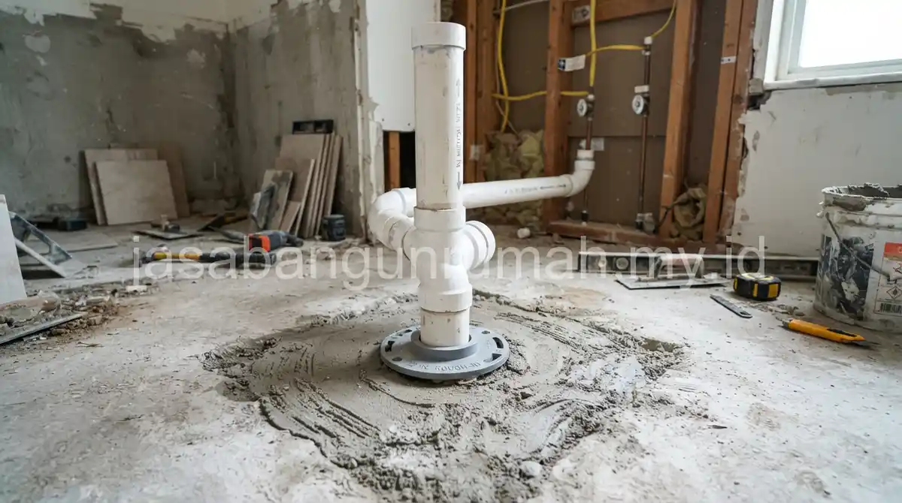

Daftar Isi
Penggantian kloset jongkok ke kloset duduk melibatkan pembongkaran unit lama, penyesuaian instalasi pipa septic tank, pemasangan semen nat anti bocor, hingga pembelian unit closet duduk baru sesuai merek yang dipilih.
Apa Saja Tahapan Proses Penggantian Kloset Jongkok ke Kloset Duduk?
Mengganti kloset jongkok menjadi kloset duduk bukanlah pekerjaan yang bisa dilakukan sembarangan. Proses ini membutuhkan ketelitian agar tidak terjadi kebocoran atau bau tak sedap di kemudian hari. Berikut adalah tahapan umumnya:
- Pembongkaran Kloset Lama: Tukang akan membongkar kloset jongkok lama beserta lantai keramik di sekitarnya secara hati-hati agar tidak merusak pipa utama.
- Penyesuaian Pipa Pembuangan: Jarak lubang pembuangan kloset jongkok dan duduk biasanya berbeda (kloset duduk butuh jarak rough-in sekitar 30-50 cm dari dinding). Tukang akan menyambung dan menggeser pipa PVC agar pas dengan dudukan kloset baru.
- Pemasangan Keramik Baru: Setelah pipa disesuaikan, area lantai yang dibongkar akan ditutup kembali dengan adukan semen dan keramik baru.
- Pemasangan Kloset Duduk: Kloset duduk dipasang di atas lubang pipa yang sudah disiapkan, direkatkan dengan semen putih atau sealant khusus, lalu dibaut ke lantai agar kokoh.
- Instalasi Saluran Air Bersih: Tukang akan memasang stop kran, selang fleksibel, dan jet washer (semprotan air) yang terhubung ke tangki kloset (flush).

Berapa Kisaran Biaya Tukang dan Bahan untuk Pekerjaan Ini?
Biaya pekerjaan ini terdiri dari upah tukang untuk pembongkaran dan pemasangan ulang, biaya semen dan keramik tambahan di area sekitar kloset, serta harga unit kloset duduk yang bervariasi tergantung merek dan fitur yang dipilih.
Berikut adalah estimasi rincian biaya ganti kloset jongkok ke duduk:
- Unit Kloset Duduk: Rp 700.000 - Rp 2.500.000 (tergantung merek seperti Toto, American Standard, atau merk standar lainnya).
- Material Tambahan: Rp 200.000 - Rp 400.000 (Pipa PVC, lem pipa, semen, pasir, keramik pengganti, stop kran, dan selang fleksibel).
- Upah Tukang (Borongan per titik): Rp 350.000 - Rp 600.000 (tergantung tingkat kesulitan pembongkaran lantai).
Secara total, Anda perlu menyiapkan anggaran sekitar Rp 1.250.000 hingga Rp 3.500.000 untuk satu titik kamar mandi. Kloset duduk dengan merek standar umumnya memiliki harga yang lebih terjangkau dibandingkan merek premium dengan fitur tambahan seperti sistem dual flush hemat air atau soft-closing cover.
Apakah Instalasi Pipa Septic Tank Perlu Diperbarui Saat Penggantian?
Instalasi pipa septic tank utama umumnya tidak perlu diganti total. Namun, penyesuaian pada bagian sambungan (leher angsa) dekat kloset mutlak diperlukan agar posisi lubang pembuangan sesuai dengan desain kloset duduk yang baru.
Pemeriksaan kondisi pipa lama sebaiknya tetap dilakukan sebelum pemasangan. Jika pipa lama sudah rapuh atau ukurannya terlalu kecil (kurang dari 4 inch), sangat disarankan untuk menggantinya agar tidak terjadi penyumbatan yang dapat menimbulkan masalah setelah kloset baru terpasang.
Bagi pemilik rumah yang ingin mendapatkan estimasi biaya lebih rinci dan pengerjaan yang rapi tanpa bocor, dapat menghubungi jasa renovasi profesional kami untuk berkonsultasi dan mendapatkan penawaran harga terbaik.